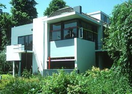

Kezdõlap Magunkról Referenciák Ajánlatkérés
Kezdõlap Magunkról Referenciák Ajánlatkérés
Kezdõlap Magunkról Referenciák Ajánlatkérés
A Fiktívterv Építész Stúdiót 1996-ban alapítottuk. A stúdiónak három alapító tagja van:
Tevékenységi körünk az építészeti - városrendezési - belsõépítészeti tervezési munkák teljes spektrumát lefedi.
Ahhoz, hogy átfogó képet kaphasson eddigi munkáinkról, kérjük "lapozza át" a Referenciák menüpont alatt a feltöltött referencia munkákat.
A feltöltött bemutatkozó anyagot igyekeztünk úgy összeválogatni, hogy átfogó képet kaphasson: vázlatokat, rajzokat, látványképeket is megjelenítünk, melyekbõl talán érzékelhetõvé válik, hogy mire számíthatsz tervezési fázisban.
Munkánk során arra törekszünk, hogy átláttassuk, felismertessük megrendelõinkkel az építészet professzionális és személyes mivoltát, beláttassuk a becsempészhetõ emocionális töltést. Hisszük, hogy az építészet az a mesterség, ami egyben minden szakma, minden mûvészet és minden érzelem olvasztótégelye, s ha e tégelybõl valamely összetevõ kifogyóban van, az építészet üres anyaggá lesz.
Valószínû, hogy a megrendelõk ezt nem érzékelik, de nem is ez a dolguk - ez az építész feladata.
Készítette: Gipsz Jakab, e-mail: gipsz@valahol.hu